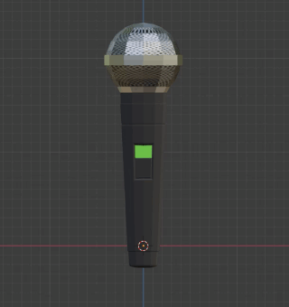
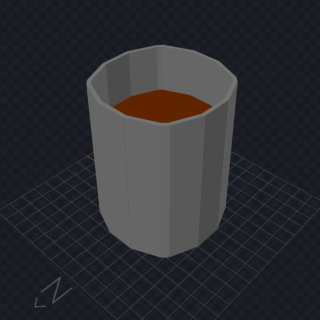
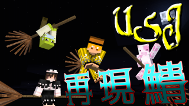
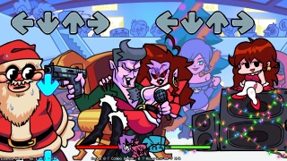
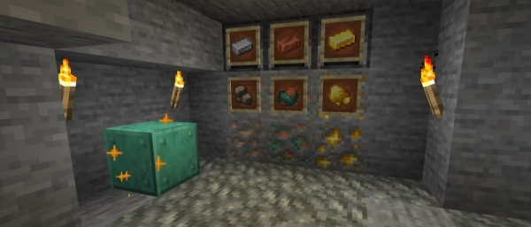
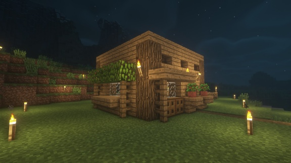
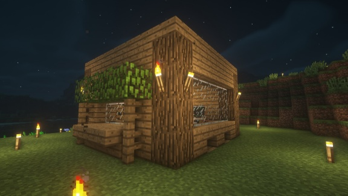

ぐちゃブロ(1)2021/04/21
ぐちゃブロって?
どうも、他の人の動画でカービィ64の話が出た時に「バーニングカッター!!」って一人で言ってるはちみつです。
今日から「ぐちゃブロ」というものを始めてみることにしました。
そういえば僕今までブログっぽいブログって書いてなかったじゃないですか。
で、今までの記事みれば分かるんですけどたぶん毎回「何書けばいいのか分かんねぇ!」って言ってると思うんですよ。
皆さんお察しの通り国語力が皆無なので話してる時も凄い軸がぐちゃぐちゃになるんですよ。
だから(論点)ぐちゃ(ぐちゃな)ブログということで「ぐちゃブロ」ってタイトルにしました。これからも続けていく予定です。予定です。
最近やってること
最近実は色々と作りたいものがまた増えてきて、色んなソフトを調べて触ってみたりしてるんですけど、中々上手く行かないんですよねw
具体的に何使ったかと言うとBlenderとかBlockBenchとかのモデリングソフトですね。(クリックするとダウンロードサイトに飛べます)
まずBlenderなんですが、これは有名な3Dモデリングソフトですね。
僕は多分Blenderの1000分の1くらいの機能しか使えてないっていうくらい多機能なソフトで無料なんですね。

↑のGIF画像が最近Blenderで作った「マイク」です。
なんでBlenderやってるかって言うと、VirtualCastというソフトで作ったモデルを出して遊べるからなんですよね。
まあVtuberとかが配信するソフトなんですけど、僕も次回のVR動画からオープニングはここで撮ろうと思ってます。
自分で作った3Dモデルを自分で触って動かしてもっとコーディングとかすれば遊べるっていうのはロマンありますよね!(ロマンだけで動いている男)
で、もう一つBlockBenchっていうのはMinecraft用の3Dモデリングソフトです。
こっちはBlenderよりも操作が簡単で、Minecraftのテクスチャとかによく使われてますね。

↑がBlockBenchの画面です。もっと凝ればMinecraftの世界に球体を追加したり・・・っていう事が出来ちゃうわけです。凄いですよね!
去年の8月ごろに、4人(?)でマイクラでUSJを再現しているマップにお邪魔させていただいた時のサムネは、箒を似たようなソフトのModelBenchというソフトを使って作りました。

(ちなみにMineimatorを使って体を動かしてます。)
ってな感じで最近はモデリングにハマったりハマらなかったりしてますね。
楽しいですよ、モデリング。
音ゲーにハマった
実はつい最近知ったゲームがあって、Friday Night Funkin'っていう音ゲーなんですよね。

もしかしたら海外の音ゲーマーとかを見る人は知ってるかもしれないですが、去年配布されたゲームですね。
1ステージ3曲で6ステージあるので計18曲あります。
公式の説明には「DDR(DanceDanceRevolution)のようなものです」って書いてあったんですけど、まあそれはノーツの形だけですね。
このゲーム、面白いのが主人公が相手のマネをして歌うっていうパラッパラッパーみたいなゲームなんですけど、ミスったりすると歌が途切れちゃったりするんですよ。
だから「ミスると曲が途切れる!!」っていうハラハラがあります。あるよね? あるよな? なぁ?(殴
残念ながら僕は下手くそなのでプレイに関しては他の人の動画を見て欲しいんですけど、とにかく曲がイイんですよ。
まあその代わり難易度はめっちゃ高いです。是非やってみてくださいw
最新版のマイクラ

そういえばこの前、Minecraftのスナップショットで鉄、金、銅が鉱石ブロックとしてではなく、別のアイテムとして出てくることで幸運のエンチャントに対応するっていう記事があったんですよ。
まあそれ読んで僕は「ナチュラルに銅出てこないで」とか思ったけどそんなことはどうでも良くて(銅だけに)(しょーもない)(ごめんなさい)
中々興味深いですよね!僕としては今後銅がどのように使われるのかっていうのがとても気になります。
ただ単に武器とか防具用に使えるだけなのか、それとも工業の要素が新たに追加されていくのか、ここら辺が凄い気になります。
僕は正式にリリースされてからプレイするのでスナップショットはやってないんですけど、楽しみですよね!(次バージョンは色々要素を追加しようとしすぎて開発が遅れてるとか...)
まあそんなわけで(?)僕も建築力を上げなければならないという事で(?)最新バージョンの1.16.5でMineAllとCutAllを入れてバニラサバイバル(???)を久しぶりにしてみました。
とりあえず見た目が良い家を作る時には、凹凸を付けることが大事っていうのをどこからか聞いたことがあって、凹凸の付け方を研究しながら拠点を作ってみました。


というわけでこんな感じで作ってみました!
割と自分ではイイ感じに出来たなぁとは思うんですけど、何故かこのサイズで30分位色々考えて試行錯誤してました。建築センスある人ってマジで羨ましいなぁ...w
最後に
というわけでこんなもんですかね!
何となく「ぐちゃブロ」がどんな感じなのか分かっていただけたでしょうか?めちゃくちゃに話コロコロ変わったでしょ?
こんな感じでこれからも色々書いていこうと思います。是非暇な時に見てくださいね。
最後まで見てくれてありがとうございました!!